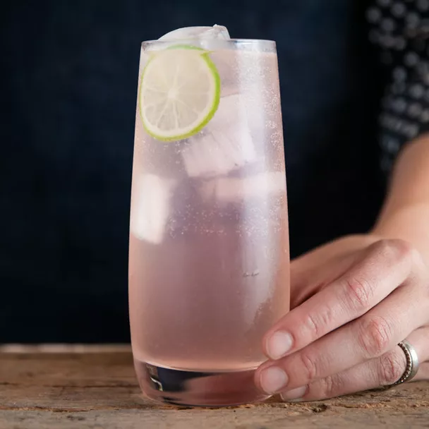

The paloma is a Mexican cocktail that competes with the likes of the Margarita.
Ingredients
- 2 ounces tequila
- 1/2 ounce lime juice
- Grapefruit soda
- Lime wheel
- Salt
- Ice
Steps
- Rub a lime wedge around the edge of a highball glass, and dip the rim in salt
- Add the tequila and lime juice to the glass and fill with ice
- Top with grapefruit soda, and stir briefly and gently to combine
- Garnish with a lime wheel